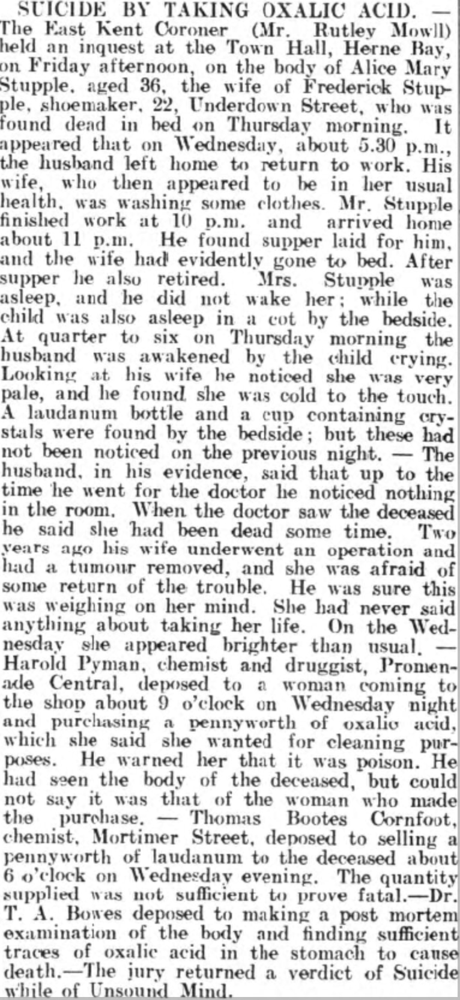

Alice Mary Stupple (née Robinson) 1873 - 1910
[ Home ] | [ Calendar ] | [ Surnames Index ] | [ Errors ] | [ Family History ]Alice Robinson, the wife of Frederick Stupple (the first cousin three-times-removed on the mother's side of Nigel Horne), was born in Walworth, London, England in 18731,2 and married Frederick (a bootmaker and repairer with whom she had 3 children: Ethel Mary Alice, Margery Ida and Winifred Lucy, along with 2 surviving children) at Christ Church, Herne Bay, Kent, England on 26 Dec 18954. On 31 Mar 1901, she was living at North Street in Herne Bay1.
She died on 5 Oct 1910 at 22 Underdown Street in Herne Bay3 (suicide).
Children
- Ethel Mary Alice was born on 25 Nov 1896
Citations
- 1901 England, Wales & Scotland Census - Findmypast (was age 28 and the wife of the head of the household)
- Kent, Canterbury Archdeaconry marriages 1538-1928 - Findmypast
- England & Wales deaths 1837-2007 - Findmypast
- England & Wales marriages 1837-2008 - Findmypast
Media
Canterbury Journal, Kentish Times and Farmers' Gazette - 8 Oct 1910

Kent, Canterbury Archdeaconry marriages 1538-1928 - GBPRS/CANT/M/97074082/1
England & Wales marriages 1837-2008 - BMD/M/1895/4/AZ/000307/167
Kent, Canterbury Archdeaconry marriages 1538-1928 - GBPRS/CANT/M/97074082/2
Family Tree

Map
Generated by ged2site. Last updated on Jul 3, 2024
Known Issues
No records of living with anyone